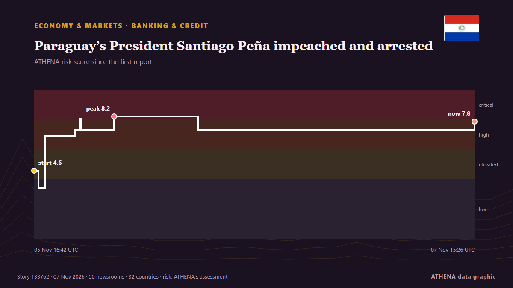

Economy
Global economy today
Last 24 hours — events: 46, countries: 31. Highest risk now: 7.4 — Paraguay’s Pena impeached over banking crisis.

Economy & MarketsParaguay’s President Santiago Peña impeached and arrested
The accounting black hole at Ueno Bank wipes out public funds, leaves thousands without access to their deposits and drives Paraguay into its worst institutional crisis in years. from Euronews English
| 25 Oct | 12 |
|---|---|
| 26 Oct | 50 |
| 27 Oct | 42 |
| 28 Oct | 47 |
| 29 Oct | 47 |
| 30 Oct | 52 |
| 31 Oct | 21 |
| 1 Nov | 24 |
| 2 Nov | 58 |
| 3 Nov | 55 |
| 4 Nov | 43 |
| 5 Nov | 44 |
| 6 Nov | 22 |
| 7 Nov | 9 |
Trackers
Latest
UN probe accuses Israel of 'extermination' in West Bank
GENEVA, Switzerland — Israel has committed the crime against humanity of "extermination" in the West Bank, while continuing to commit "genocide" against Palestinians in the Gaza Strip, United… from The Korea Times
China's giant pandas make public debut at US zoo
The pair are to be hosted in the southern US facility for the next 10 years. from The Straits Times
Barclays bank to cut about 5,000 jobs amid AI drive
LONDON: British bank Barclays announced Thursday plans to cut around 5,000 jobs, or roughly five percent of its global workforce, by the end of 2026 in an AI efficiency drive. from Business Recorder
West Bank: Palestinians harvest olives under Israeli military restrictions
Palestinian farmers in the occupied West Bank have been allowed limited access to their olive groves under Israeli military restrictions. from Euronews English
Israel kills Palestinian in Gaza, seizes eight homes in occupied West Bank
Israeli attacks target several areas of Gaza as Palestinian authorities report new homes and more than 620 acres of land near Ramallah seizures in occupied West Bank. from TRT World
US Fed holds interest rates steady despite 'too high' inflation
The US Federal Reserve is expected to keep interest rates unchanged in its upcoming meeting next week. from Times of India
Jordan's king says 'no security or stability' in region without Palestinian homelan
Jordan’s King Abdullah II on Monday said there would be no security in the Middle East region until the Palestinians’ right to a homeland is fulfilled. from Hespress English
French bank hit by €100 million cyber attack recovers some funds
French banking firm Crédit Mutuel Arkéa said it was the target of a cyberattack on Wednesday, with hackers converting over €100 million into cryptocurrency. from Le Monde (English)
Interest rate hikes unlikely to be a repeat of 2022, says Bank’s chief economist
Intermodal marketing companies and railroads are using ongoing bid negotiations to raise rates in annual agreements for 2027. from The Journal of Commerce (JOC)
Disney plans thousands of layoffs as managers asked to cut costs by 20%
California: Walt Disney is considering cutting thousands of jobs as the entertainment giant seeks to reduce costs, with some managers asked to identify annual savings of 20 per cent, Bloomberg… from Gulf News
Fed holds main interest rate steady despite accelerating inflation
Two policymakers on the Federal Open Market Committee dissented in favor of raising the federal funds rate by 0.25 percentage point. from Supply Chain Dive
Shadab heroics lift Pakistan past England
Pakistan all-rounder Shadab Khan struck an unbeaten 113 and shared a record 89-run last-wicket stand with Haris Rauf as the hosts rallied from 154-9 to secure a one-wicket win... from Oman Observer
What this page covers
This page follows the events that move the world economy: growth, inflation, interest rates, central banks, public debt, jobs and trade. Each event is checked across independent outlets and scored for risk, so a claim reported by one source alone is not presented as fact.
Read it together with Markets, which shows what prices did, and Shipping, which shows what is happening to trade routes and energy supply. Together they show how a political event reaches money and goods.
What we watch
- Central-bank decisions and the path of interest rates
- Inflation, growth and jobs releases
- Energy prices and supply
- Government debt and credit ratings
- Tariffs, trade measures and sanctions
- The Greek and Cypriot economies